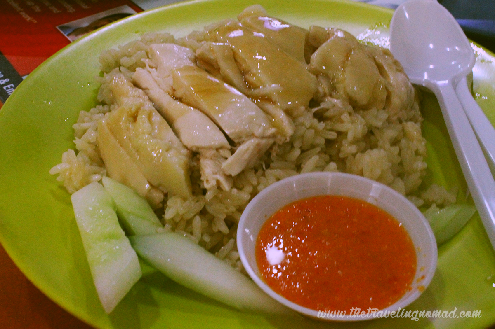
01expedition
Eat
Hawker legends, crab feasts, the Peranakan–Indian–Malay–Chinese threads and offbeat supper spots.
Read the dispatch →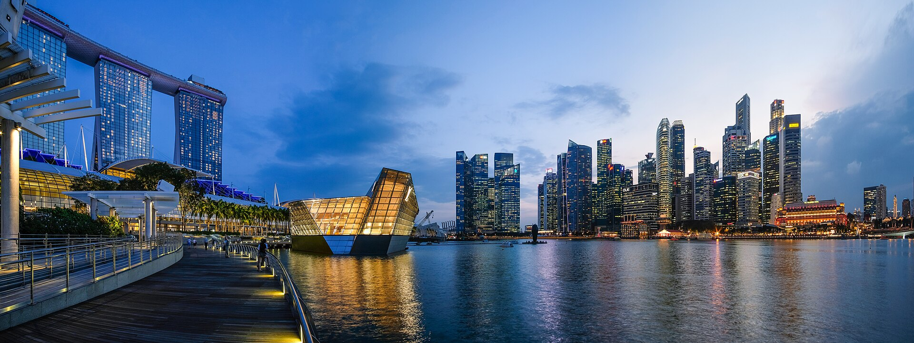
Singapore is an easy first trip — give it about four nights and you can eat, walk and gawp through the whole island without a forced march. If you do nothing else, do these.
The cooled domes and the Supertree Grove, timed to the free nightly Garden Rhapsody light show.[1][2]
Hainanese chicken rice at Maxwell — part of Singapore's UNESCO-listed hawker culture; mains run €3–5.50.[3][4]
Up to the SkyPark observation deck for the bay-and-towers panorama.[5]
Henderson Waves and the ridge boardwalk — free, permit-less, and shaded.[6]
Cycle the last kampong island out to the Chek Jawa wetlands.[7]
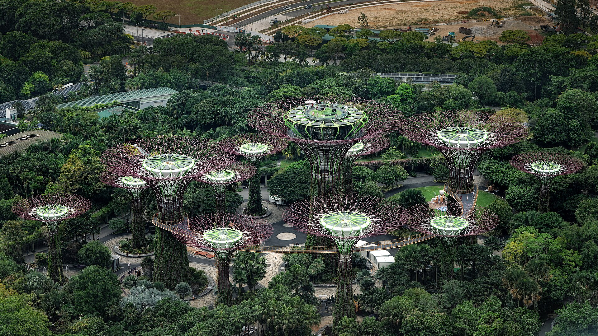
One degree off the equator, the weather barely moves — so let a festival pick your dates, not a season.
Hot and humid year-round; you dodge rain and haze, not seasons. Driest, comfiest windows are roughly Feb–Apr and Jun–Sep. The wet NE monsoon (Nov–Jan) brings ~19 rain days a month — short, heavy evening storms.[8]
Transboundary haze is possible Jun–Oct when winds carry regional smoke — check the NEA forecast before booking outdoor-heavy days.[9]
The marquee night-out is the F1 night street race (9–11 Oct 2026).[10] Late January stacks Singapore Art Week and citywide Light to Night.[11] For raw spectacle, Thaipusam (1 Feb 2026) sends a kavadi procession through Little India.[12]
~S$1 ≈ €0.69 in 2026.[13] Food is the bargain — hawker mains €3–5.50[3] — while hotels and paid icons are the splurge. Budget the day around stays and big-ticket sights, not meals.
EU passports get 30 days visa-free; the only admin is the free SG Arrival Card, filed online within 3 days of arrival (it's not a visa).[14]
From Changi, the MRT reaches the city in ~35 min for €1–1.50; a Grab is €13–24 if you land late or heavy-laden.[15] Tap any contactless card on the MRT — no ticket needed — and budget ~€4–8/day on transit.[16]
Famously safe and low-hassle. Main courtesies: cover shoulders and knees for temples and mosques, and clear your own tray at hawker centres (now the norm).
Four nights fits the city-state without rushing. Base for character; spend one night on the icon.
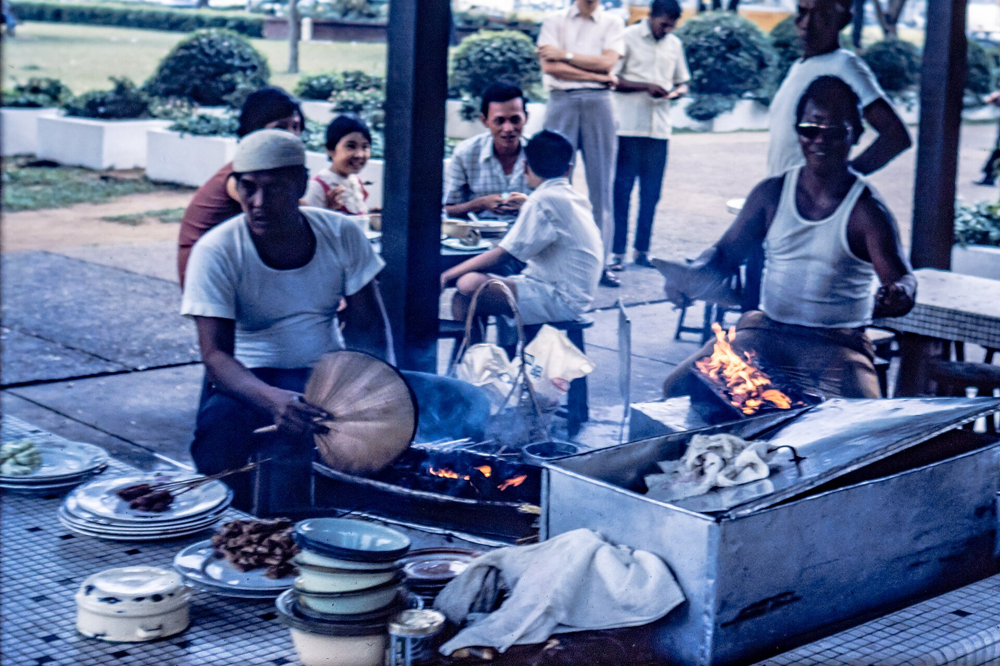
Drop bags and eat at Satay Street, Lau Pa Sat, where the lane turns into a satay grill nightly from 7pm.[19] Walk Marina Bay for the free Garden Rhapsody show at the Supertrees.[2]
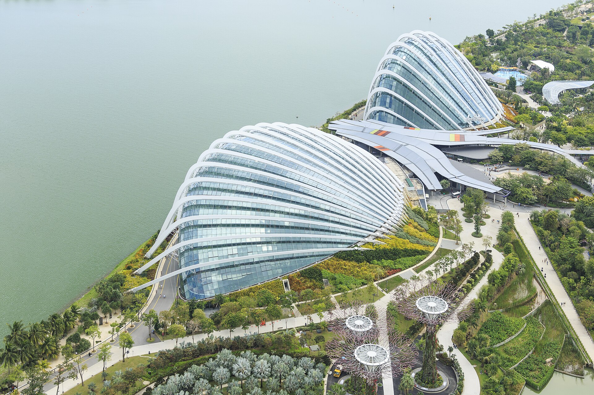
Gardens by the Bay domes and Supertree Grove[1], the MBS SkyPark for the skyline[5], the Merlion, and — if you fly through Changi — Jewel's Rain Vortex.[20] Dinner: chicken rice at Maxwell.[3]
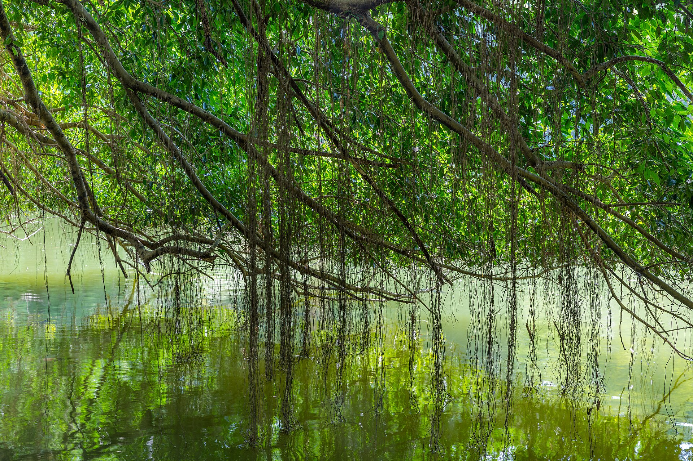
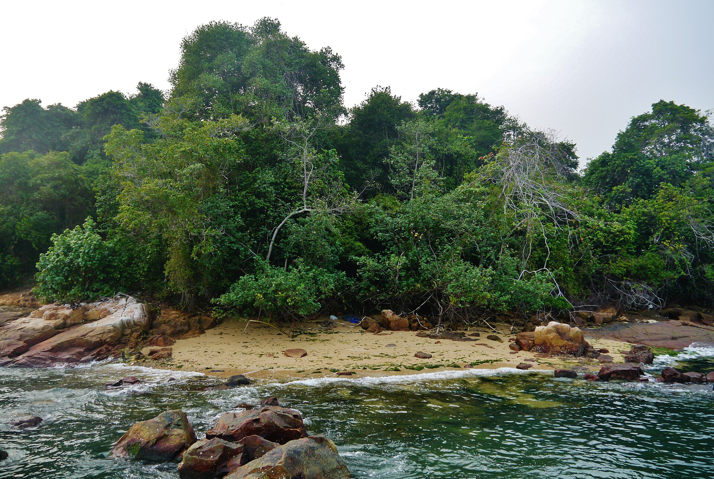
Cycle Pulau Ubin to the Chek Jawa wetlands — the standout offbeat day[7] — or do the MacRitchie TreeTop Walk.[23] For the truly weird, swap in Haw Par Villa's Ten Courts of Hell.[24]
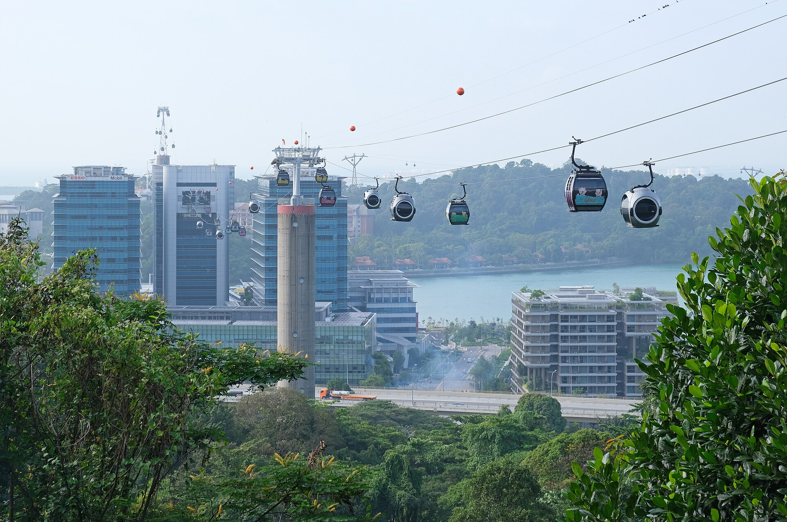
Each axis is its own field report — the full picks, prices and bookings live in these seven pages.

Hawker legends, crab feasts, the Peranakan–Indian–Malay–Chinese threads and offbeat supper spots.
Read the dispatch →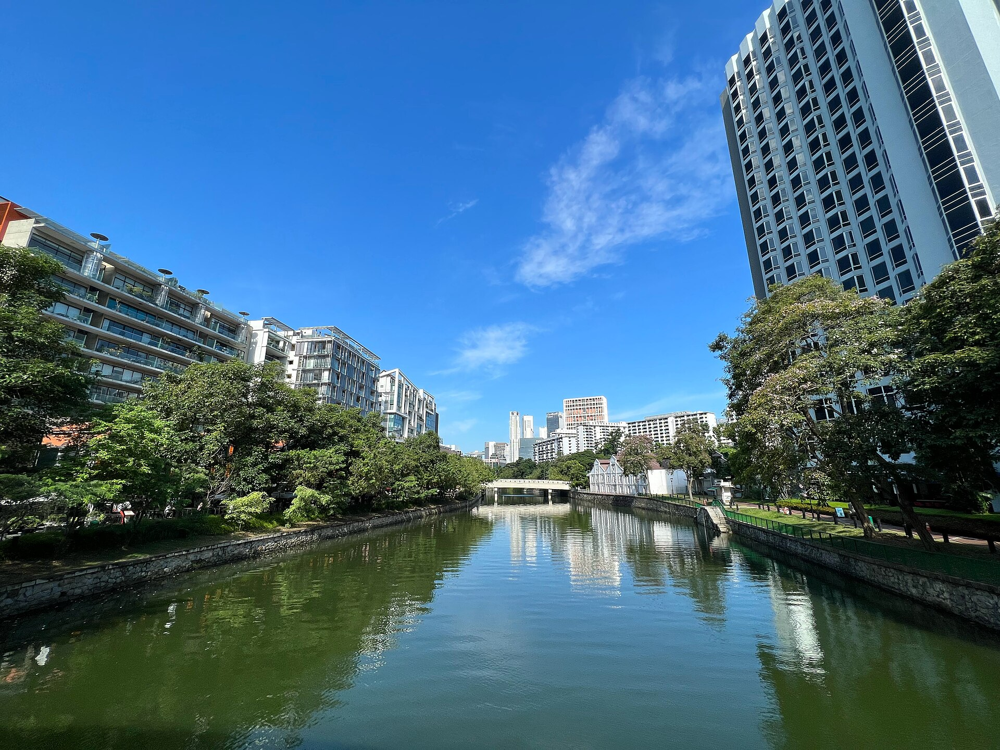
Character over category: shophouse, design, heritage and treehouse stays across six base neighbourhoods.
Read the dispatch →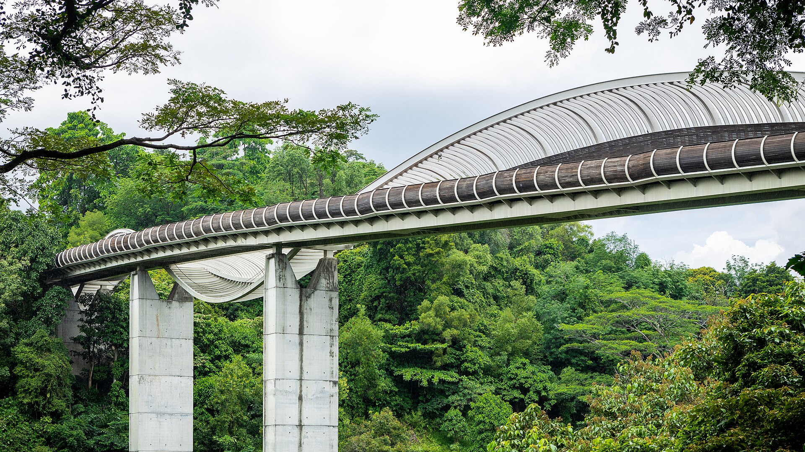
Trek-light, kayak, cycle, swim and snorkel-light — difficulty, guide-need and half/full-day for each.
Read the dispatch →The can't-miss icons, ethnic-quarter heritage, the UNESCO Botanic Gardens — ranked must-do vs skippable.
Read the dispatch →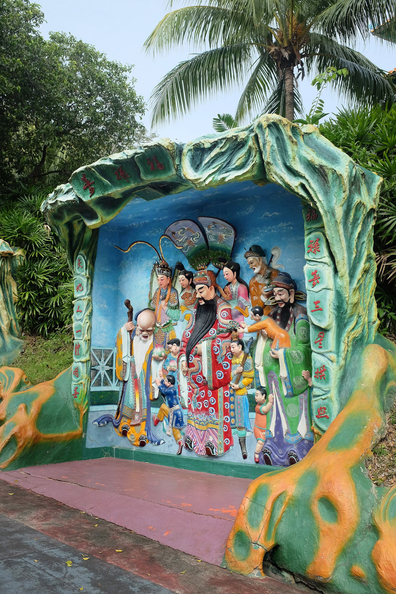
The strangest corners — hells, ghost reservoirs, last villages, leaning mosques and dragon kilns.
Read the dispatch →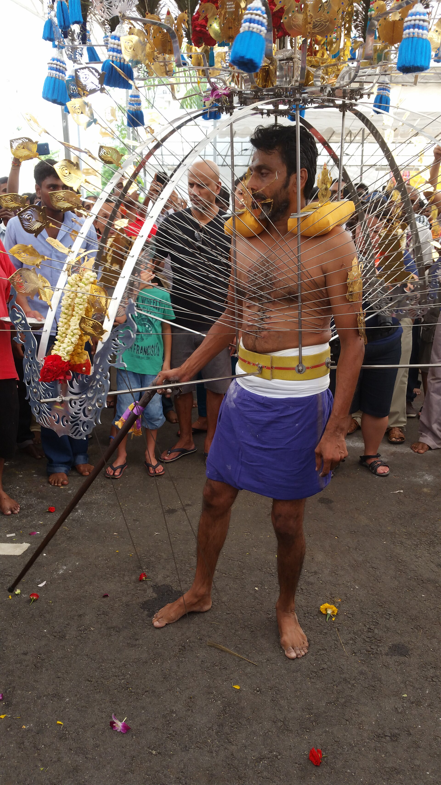
Museums, festivals and crafts — marquee and offbeat, tagged by location and dated for 2026.
Read the dispatch →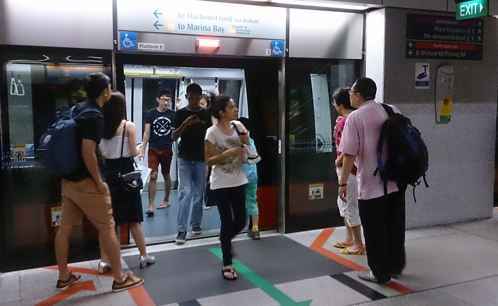
Changi-to-city, getting around by MRT/Grab, and the day-trip orbit — Pulau Ubin, the southern islands, JB, Bintan.
Read the dispatch →